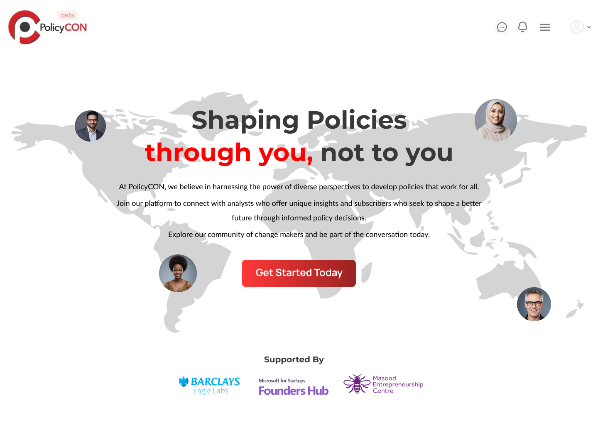
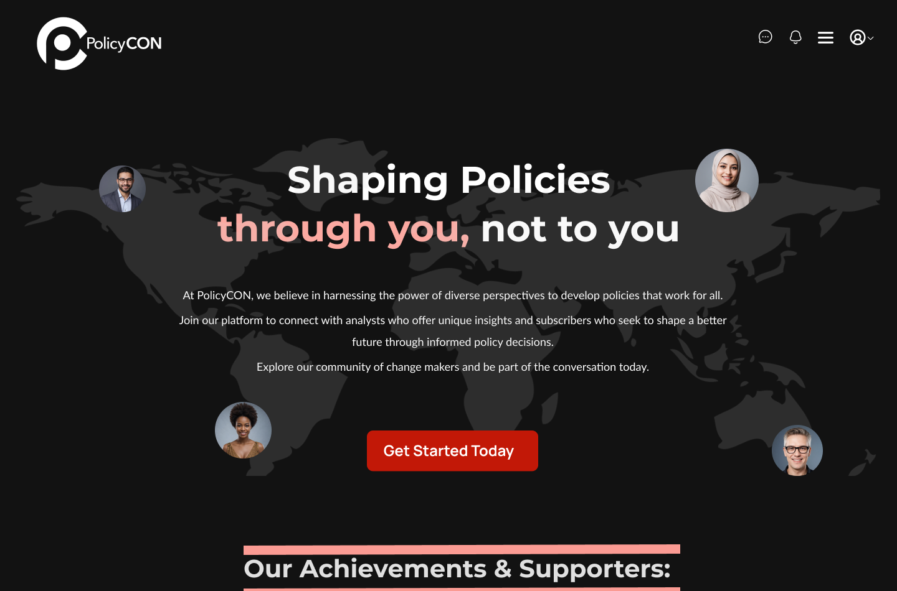
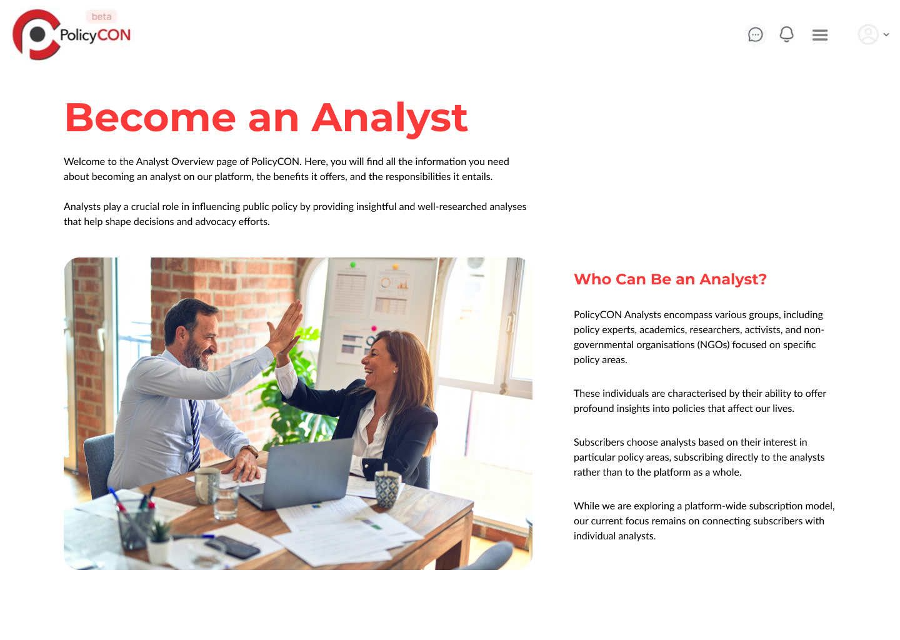
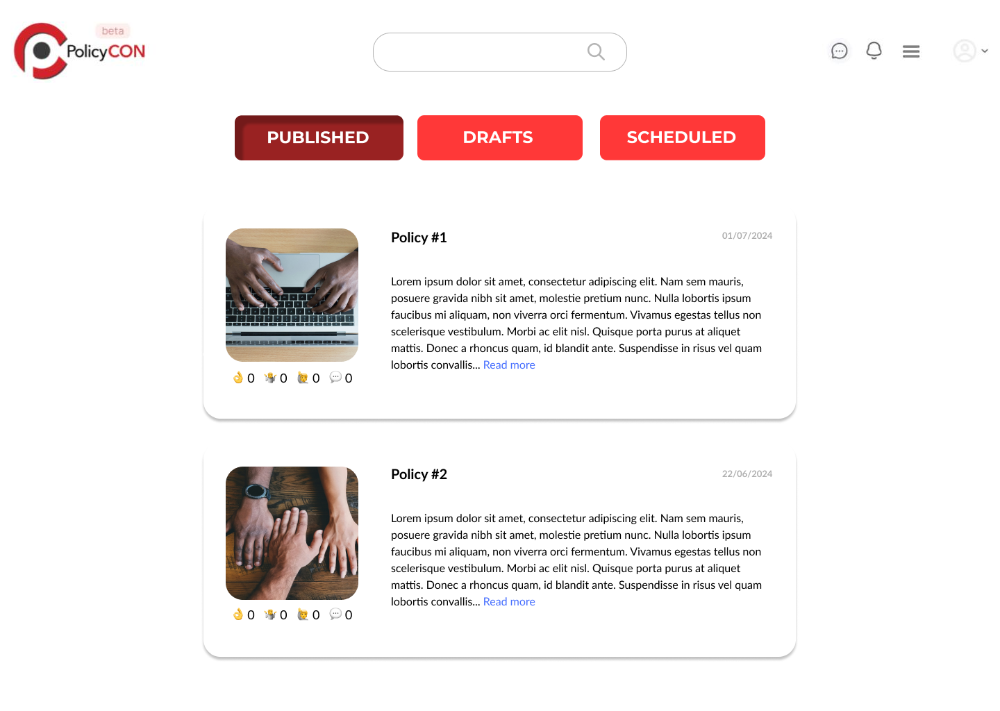
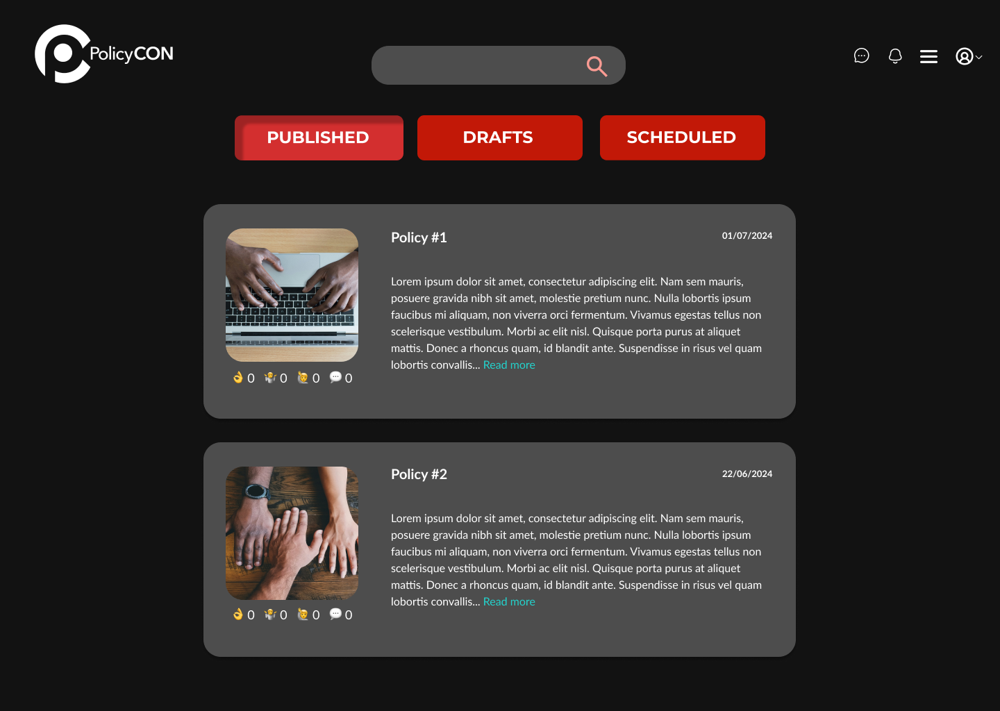

Designed for accessibility, comfort and focus in low-light environments.
I led the design and implementation of a fully accessible Dark Mode feature to enhance usability in low-light conditions. I handled the entire project solo — from identifying user pain points to delivering the final visual system and documentation. The focus was on ensuring accessibility, visual consistency, and seamless integration within the existing UI.
Reduce eye strain and improve readability using accessibility guidelines (WCAG 2.1).
Prototyped in Figma. Tested contrast, keyboard navigation, and focus indicators.
Audited the interface under different light environments. Compared dark mode patterns in industry apps.
Mapped use cases and decided which screens and states required a dark alternative version.
Created a new color token system and ensured accessibility ratios across components and states.
Ran quick tests for contrast compliance, keyboard navigation, and screen reader support.
Before
After
Before
After
Before
After
“Designing for everyone means designing for clarity, comfort and choice.”